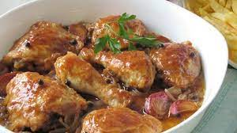

Chicken with Coca-Cola

Coca Cola chicken is an original and curious recipe, which you would initially refuse to prepare due to its high sugar content, but once you try it, you instantly fall in love with its tasty and caramelized sauce!
If you have problems with sugar, it is not a dish that should be abused, but it is very worth doing from time to time, since it is very good, it is easy, quick and you will only need 4 basic ingredients!
Ingredients
- 6 Chicken thighs
- 1 Cup of onion soup
- 1 Bottle of Coca-Cola 250ml
- ketchup sauce 50g
- Salt, pepper and spices
- Extra virgin olive oil
Steps
- Season the chicken thighs
- Heat 4-5 tablespoons of virgin olive oil in a large frying pan, and brown the chicken on both sides. Cover the pan to speed up the process.
- Add the onion soup, the ketchup sauce and finally the Coca Cola. Stir.
- Cook everything together over medium heat for 15 minutes or until the sauce is reduced by half. Cover the pan to avoid splashes.
- Stir occasionally so the sauce doesn't stick to the bottom. If necessary, lower the heat.
- Serve freshly made with the sauce on top, and accompany if desired with cooked rice.